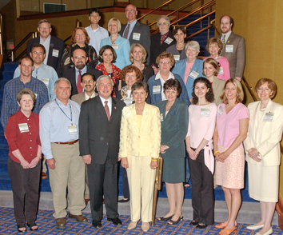

-
Introduction
Participants in the Survivor-Researcher Mentor Program with Dr. Andrew von Eschenbach, Director, National Cancer Institute and Lunchtime Speaker The Honorable Sue Myrick, United States House of Representatives, Charlotte, NC.
- Late Effects After Cancer
- “Curing The Cancer And The Patient”
a personal reflection by Doug Bank - “Psychosocial Interventions For Cancer Survivors, Caregivers And Family Members—One Size Does Not Fit All: My Perspective As A Young Adult Survivor, Advocate, And Oncology Social Worker”
a personal reflection by Mary Grace Bontempo - “Awareness, Progress, And Hope”
a personal reflection by Sally De Lipkau - “Meeting The Needs Of Post-Treatment Cancer Survivors”
a personal reflection by Shirley Grandahl - “Important Research On Quality Of Life After Treatment”
a personal reflection by Win Hodges - “After Treatment”
a personal reflection by Cynthia Lofaso - “Neurocognitive Effects Of Cancer Treatment In The Pediatric Population”
a personal reflection by Cyndi Mackinlay - “Cancer Survivorship, Pathways To Health After Treatment: Late Psychosocial Effects Of Cancer, Treatment And Interventions To Address Them”
a personal reflection by Jack David Marcus - “Beyond The Oncologist’s Office: A Comprehensive Health Program For Cancer Survivors”
a personal reflection by Kate Murphy - “New Directions In Cancer: Surviving Cancer And Beyond”
a personal reflection by Gina Petrak - “Late Psychological Effects of Cancer & Its Treatment”
a personal reflection by Jennifer Edens Simmons
- “Curing The Cancer And The Patient”
- Status Of Cancer Survivorship Interventions
- “The Importance Of Exercise And Diet For Cancer Survivors ”
a personal reflection by Chris Brewer - “Building A Bridge To Cancer Survivors”
a personal reflection by Marion Burch Cimbala
- “The Importance Of Exercise And Diet For Cancer Survivors ”
- Understudied Populations
- “2015 Success...Inclusion Required”
a personal reflection by Jeffrey Brown - “Exploring The Needs Of Child And Adolescent Survivors”
a personal reflection by Sara Elizabeth Rudolph
- “2015 Success...Inclusion Required”
- National Priorities In Cancer Survivorship
- “National Priorities In Cancer Survivorship”
a personal reflection by Sandra Batte - “Advancing The Survivorship Agenda”
a personal reflection by Michael Lin - “Access And Data For All—No More Surprises, Please!”
a personal reflection by Rebecca Morris
- “National Priorities In Cancer Survivorship”
- Economic Issues
- “Economics Of Survivorship”
a personal reflection by Gib Smith - “Issues Concerning Employment & Insurance”
a personal reflection by Mary Zapor
- “Economics Of Survivorship”